On Repulsive and Attractive Teachers
Separating correctness from behavior in self-distillation
1ETH Zurich 2Max Planck Institute for Intelligent Systems
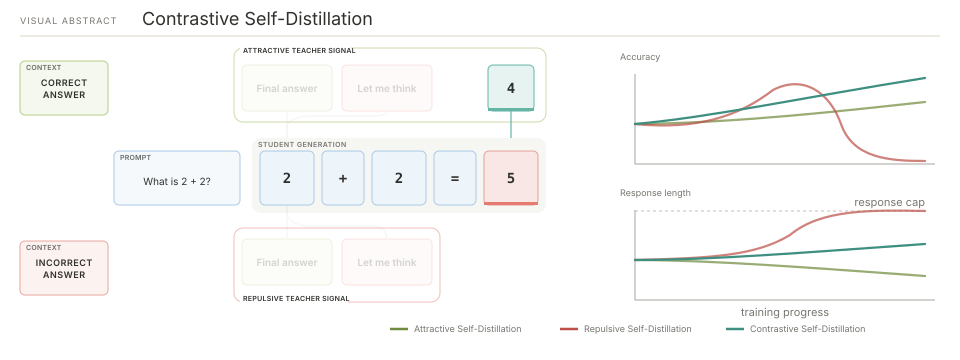
Overview
If you followed LLM post-training this year, one technique kept showing up: on-policy distillation (OPD).
The central promise of OPD is to transfer knowledge and capabilities from a teacher model to a student via the dense, token-level supervision of conventional knowledge distillation. Instead of imitating expert-level teacher responses (responses the student is unlikely to come up with on its own), the student first generates its own answer. The teacher then rescores this answer token by token, providing a dense training signal along trajectories the student actually follows, including errors the student is likely to make.11On-Policy Distillation (Lu et al., Thinking Machines Lab, 2025)
Self-distillation22SDPO 3, SDFT 4, and OPSD 5 independently introduced closely related approaches to on-policy self-distillation around the same time.3Reinforcement Learning via Self-Distillation (Hübotter et al., 2026)4Self-Distillation Enables Continual Learning (Shenfeld et al., 2026)5Self-Distilled Reasoner: On-Policy Self-Distillation for Large Language Models (Zhao et al., 2026) takes this idea one step further by using the same model as both student and teacher. Rather than relying on a stronger external teacher, it creates a better-informed teacher distribution by conditioning the same model on privileged information (PI), such as feedback or successful attempts. This distribution is then distilled into the student by scoring the student’s rollouts token by token.
This dense, token-level signal makes on-policy distillation and self-distillation an efficient alternative to RLVR methods such as GRPO,66DeepSeekMath: Pushing the Limits of Mathematical Reasoning in Open Language Models (Shao et al., 2024)7Introducing Composer 2.5 (Cursor Team, 2026)8Aligning Language Models from User Interactions (Kleine Buening et al., 2026)9OpenClaw-RL: Train Any Agent Simply by Talking (Wang et al., 2026) which are bottlenecked by the low information density of scalar rewards. It has therefore become an attractive ingredient in modern post-training recipes. For instance, Cursor uses an SDPO-style objective for targeted textual feedback in Composer 2.5.7 Recent work also uses self-distillation to learn alignment and personalization from raw user interactions,8 while related feedback-conditioned distillation enables online agent adaptation from user replies, tool outputs, and environment state changes.9
However, conditioning a model on privileged information can also lead to unintended behavioral shifts.1010By behavioral shift we mean a change in response style that isn't directly relevant to performance, such as increased confidence, verbosity or sycophancy.11Why Does Self-Distillation (Sometimes) Degrade the Reasoning Capability of LLMs? (Kim et al., 2026)12Privileged, but Biased: How PI-Conditioned Teachers Break Self-Distillation (Harne et al., 2026) When the privileged context reveals a complete solution, the resulting teacher can suppress verbalized uncertainty, checking, and exploration, which may lead to overconfidence and a preference for concise responses.11 How strongly the teacher’s behavior shifts depends on the privileged information it receives.12 SDPO3 in its original form remains well suited to settings such as coding feedback, which pinpoints local errors without revealing the full solution. Yet, when the teacher sees a correct solution (e.g., from an expert or from the batch's rollouts), the behavioral shift to concise and confident responses can be very pronounced.
To prevent this suppression of exploration, AntiSD1313Anti-Self-Distillation for Reasoning RL via Pointwise Mutual Information (Shen et al., 2026)14Rebellious Student: Reversing Teacher Signals for Reasoning Exploration with Self-Distilled RLVR (Kim et al., 2026) and Rebellious Student14 reverse the sign of the distillation signal from a teacher conditioned on a correct solution, that is, they ascend the KL divergence. Flipping the sign of the objective is surprisingly effective in settings where SDPO's conciseness is harmful to performance. Yet these approaches rely on an additional verification signal through a GRPO loss to reinforce only those explorations that succeeded, and require additional mechanisms that stabilize training.
We study what this sign-reversed distillation signal actually does, by isolating it from GRPO.1515In the initial experiment (Figure 4), the repulsive signal moves away from a teacher conditioned on a correct answer, matching AntiSD and Rebellious Student. In all subsequent experiments, Repulsive moves away from a teacher conditioned on an incorrect answer.16By hybrid models, we mean models that can operate in either thinking or non-thinking mode. We find that repulsion induces a strong behavioral shift, regardless of whether the teacher is conditioned on a correct or an incorrect answer. In hybrid models,16 it pushes the model toward its latent, pre-existing thinking mode. In models without an explicit thinking mode, repulsion does not improve performance and instead mainly inflates response length until truncation causes collapse (Fig. 10).
Based on these insights, we study the combined signal of attraction and repulsion in a broader contrastive framework: balancing attraction toward a teacher conditioned on a correct solution against repulsion from a teacher conditioned on an incorrect one largely cancels the two unintended behavioral shifts, leaving the learning signal largely dominated by correctness, as shown schematically in Figure 1.
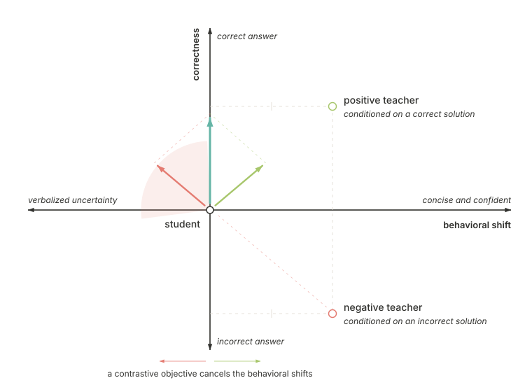
What we find
- One-sided repulsion primarily shifts behavior. Repulsion from either a correct-solution teacher (Fig. 4) or an incorrect-solution teacher (Fig. 7) drives uncontrolled response growth and becomes unstable without GRPO or additional stabilization.
- The apparent recovery is an unintended mode switch. Starting from non-thinking mode, repulsion pushes the hybrid model into its pre-existing thinking mode (Fig. 7) but does not outperform the thinking-mode baseline; when thinking is already active (Fig. 9), it mainly causes response length explosion and collapse.
- Contrastive self-distillation is stable without GRPO. Attraction toward a correct-solution teacher and repulsion from an incorrect-solution teacher largely cancel their opposing behavioral shifts across non-thinking (Fig. 7), Instruct-only (Fig. 8), and already-thinking (Fig. 9) models.
How self-distillation works
Self-distillation starts with the student attempting a task using only the information available at inference time. Given a prompt $x$, the student generates a response $y \sim \pi_\theta(\cdot\mid x)$. This response is then evaluated in the task's environment, which may provide detailed and informative feedback ${\color{#A7C66B}\boldsymbol{c}}$, for example, error messages and failing unit tests in coding tasks. The privileged context can equally be a reference solution or a successful attempt.
The same model is then reused as a self-teacher by conditioning it on this privileged context ${\color{#A7C66B}\boldsymbol{c}}$. Keeping the student’s response $y$ fixed, we then rescore the student’s response under the self-teacher, evaluating its next-token distribution at each position along the same trajectory.1717Note that we do not generate a new response from the self-teacher. We only compute the log-probability that the self-teacher assigns to each token of the fixed response generated by the student. We train the student by minimizing the reverse KL divergence between its next-token distribution and that of the self-teacher:
where $\pi_\theta(\cdot|x, y_{<t})$ is the student's next-token distribution given the prompt and previous tokens, and $\pi_{\bar\theta}(\cdot|x, {\color{#A7C66B}\boldsymbol{c}}, y_{<t})$ is the teacher's distribution when additionally conditioned on the context ${\color{#A7C66B}\boldsymbol{c}}$. Here $\bar\theta$ denotes the teacher parameters, which are treated as fixed during the student update, as are the sampled prefixes and the teacher predictions. For brevity, we write the student and teacher distributions at position $t$ as
This objective has two equivalent perspectives: it moves the student's distribution toward the teacher through on-policy distillation, or, from an on-policy RL perspective, uses the following teacher-to-student log-probability ratio as a token-level advantage:
Intuitively, this loss provides a learning signal for every token: tokens that are more likely under the context-conditioned self-teacher than under the student, ${\color{#A7C66B}\boldsymbol{p_c^t}}(y_t) > p_S^t(y_t)$, receive a positive advantage and are reinforced, while tokens that are less likely are suppressed. The same update can therefore be read either as moving the student toward the teacher or as nudging the policy to increase its expected token-level reward $A_t^{\mathrm{SDPO}}$. See SDPO 3 for the full derivations and further details. For exposition, we write all objectives in this post with the reverse KL divergence. In all experiments, we instead use the sampled-token generalized JSD variant with $\alpha=0.5$, following the divergence choice in on-policy distillation1 and SDPO.3
Attractive distillation can lead to overconfidence
Conditioning the teacher on privileged information changes not only what the teacher knows, but also what behavior it prefers. When conditioned on a complete solution, the teacher can become more confident and concise, assigning less probability to uncertainty, checking, and alternative approaches.11 Distillation transfers this behavior to the student. The resulting shorter responses can benefit knowledge-based tasks, but may harm reasoning tasks where exploration and self-correction are useful.
We can see this directly in the token-level signal. Scoring Qwen3-4B1818Qwen3 Technical Report (Yang et al., 2025)19DeepMath-103K: A Large-Scale, Challenging, Decontaminated, and Verifiable Mathematical Dataset for Advancing Reasoning (He et al., 2025) rollouts on DeepMath19 against the expert demonstration, the attractive distillation advantage is most negative exactly on the tokens that verbalize uncertainty or trigger a check.
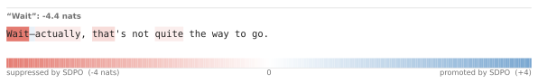
Moving away from the teacher
AntiSD13 and Rebellious Student14 counteract the suppressive effect by reversing the sign of the teacher signal: tokens that are unlikely under the privileged teacher receive positive advantages.
At first glance, this seems unintuitive: instead of learning from a correct, better-informed teacher, the student is explicitly repelled away from it. Neither method relies on this repulsion alone. In both cases, a verified sequence-level reward grounds the deviations encouraged by the sign-reversed teacher signal.2020AntiSD adds the sign-reversed distillation signal to a sequence-level GRPO advantage. Rebellious Student uses the distillation signal to reweight GRPO on verified correct rollouts.
Both papers motivate their approaches as a form of behavioral steering: reversing the sign of the signal from a teacher conditioned on a correct solution assigns positive advantages to uncertainty verbalization, checking, and alternative branches, which ultimately encourages exploration. GRPO then reinforces the explored solutions that led to success.1314
The effect is easiest to see on the sentence from Figure 2. Reversing the sign of the objective flips the token-level advantages, reinforcing the same uncertainty and self-correction tokens that attractive distillation suppresses.
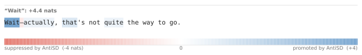
To understand the behavioral shift induced by the sign-reversed objective, we isolate its distillation signal and we remove both the GRPO component and the additional stabilizing mechanisms (i.e., entropy-triggered gate2121When the privileged teacher's median token entropy falls below a calibrated threshold, it disables the distillation term and falls back entirely on GRPO until the entropy recovers13.22Repulsion from a teacher that is conditioned on a positive solution23We train Qwen3-4B in non-thinking mode on a hard subset of DeepMath, and evaluate across six olympiad-level math benchmarks.). We investigate the training dynamics of this distillation signal,22 which we refer to as Repulsive.23
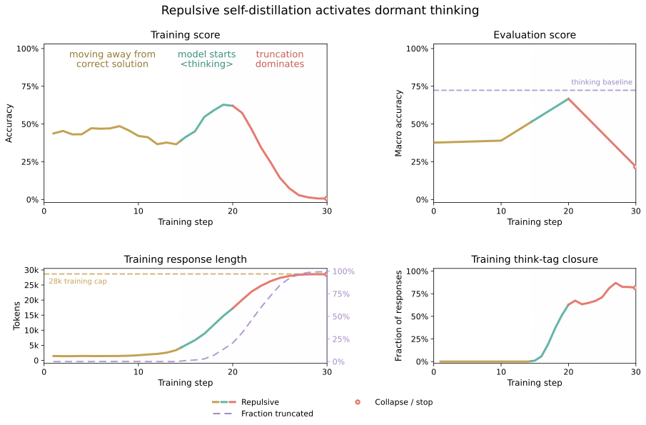
We observe that the run passes through three phases:
- As the model is pushed away from a correct but overly confident policy, training accuracy initially falls.
- At a sudden increase in accuracy, the model seems to enter the thinking regime, responses lengthen, and it even uses think-tags.
- As response truncation takes over, responses reach the 28k-token budget and training and evaluation scores collapse.
We can see this unintended mode switch directly in the rollouts. Because the model is initialized in non-thinking mode, Qwen3-4B's chat template pre-fills an empty <think></think> and the model answers directly. Yet midway through training, the model begins generating a reasoning trace and emits another closing </think> before answering, indicating that it no longer preserves the configured non-thinking behavior.
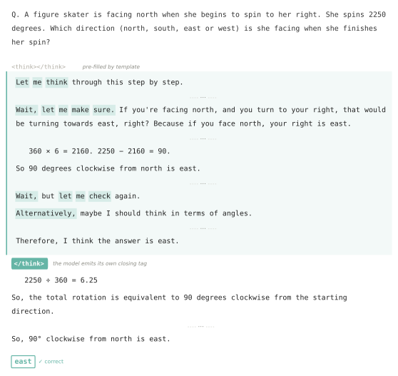
<think> block. During repulsive training, the model begins generating a reasoning trace and emits a second </think>, contrary to its configured non-thinking behavior. The response is incorrect at step 0, correct at step 20, and truncated at step 30. Each rollout is abridged, with ellipses marking omitted passages.This mode-switch-and-collapse pattern raises two questions. Does sign-reversed distillation teach a new capability, or does it primarily change the model's operating mode? More broadly, can we learn from privileged information through self-distillation without inheriting the strong behavioral shifts induced by attractive and repulsive teachers? The second question naturally leads to a contrastive framing.
Contrastive self-distillation
We have argued in the previous sections that minimizing the reverse KL to a policy conditioned on a correct solution, $\pi_\theta(\cdot\mid x,{\color{#A7C66B}\boldsymbol{c_+}},y_{<t})$, can teach the model new information and capabilities. At the same time, it elicits more direct, overconfident answers, which can reduce reasoning performance.
We also observed that ascending the same objective increases exploration, but at the cost of pushing the student away from a correct solution. If Repulsive functions mainly as behavioral guidance, it makes sense to instead condition the teacher on an incorrect solution, ${\color{#E47B71}\boldsymbol{c_-}}$.
This suggests a simple construction: create two conditional policies, one conditioned on a correct solution, ${\color{#A7C66B}\boldsymbol{c_+}}$, and one on an incorrect solution, ${\color{#E47B71}\boldsymbol{c_-}}$. When both are conditioned on behaviorally similar content, subtracting the second teacher from the first should cancel the behavioral shift they share while preserving the signal associated with correctness. Combining these two conditional policies yields a contrastive self-distillation signal, as explored in RLCSD2424RLCSD: Reinforcement Learning with Contrastive On-Policy Self-Distillation (Pan et al., 2026)25CEPO: RLVR Self-Distillation using Contrastive Evidence Policy Optimization (Heakl et al., 2026) and CEPO25. Both of these methods use pairs of oppositely conditioned teachers to modulate GRPO advantages, which stabilizes training but dilutes the dense token-level teacher signal with sparse verified rewards. We instead study the contrastive signal on its own. Below, we express this signal in terms of SDPO advantages.
Attraction and repulsion in one objective
Let ${\color{#A7C66B}\boldsymbol{c_+}}$ and ${\color{#E47B71}\boldsymbol{c_-}}$ denote positive and negative privileged contexts. Conditioning on those gives two self-teachers:
Here $p_S^t$ denotes the student's distribution, and ${\color{#A7C66B}\boldsymbol{p_+^t}}$ and ${\color{#E47B71}\boldsymbol{p_-^t}}$ denote the distributions of the positive and negative self-teachers, respectively.
Contrastive self-distillation extends SDPO (attraction toward a positive teacher) by adding a term that pushes the model away from a negative teacher:2626In practice, both teacher inputs can be batched in a single vLLM call, keeping the added wall-clock overhead modest.
The same objective can be written as a token-level policy-gradient signal. For a teacher conditioned on context $c$, the SDPO advantage is
Positive values reinforce tokens that become more likely under the context-conditioned teacher. In our notation, the corresponding token-level contrastive signal is the difference between two SDPO advantages:
For the balanced objective, $\lambda=\tfrac12$, the shared student term cancels:
When this ratio is greater than one, $y_t$ is more likely under the positive teacher than under the negative teacher, so the token receives a positive advantage and is reinforced. When it is less than one, the token $y_t$ is suppressed.
The contrastive signal is the difference between the two SDPO signals and therefore reflects how the teacher's token probabilities change when conditioned on the positive rather than the negative context.
Self-distillation with a contrastive view
Many self-distillation variants can be expressed within the same framework by varying the mixing coefficient. We focus on three objectives:
- Attractive2727SDPO uses either environment feedback or the model's own correct rollout as ${\color{#A7C66B}\boldsymbol{c_+}}$ 3. ($\lambda=1$): a correct solution as ${\color{#A7C66B}\boldsymbol{c_+}}$
- Repulsive2828Here, the self-teacher is conditioned on a wrong answer. This differs from AntiSD, which repels the student from a self-teacher conditioned on a correct answer 13. ($\lambda=0$): the model's own incorrect rollout as ${\color{#E47B71}\boldsymbol{c_-}}$
- Contrastive ($\lambda=\tfrac12$): a correct solution as ${\color{#A7C66B}\boldsymbol{c_+}}$ and the model's own incorrect rollout as ${\color{#E47B71}\boldsymbol{c_-}}$
The correct solution can be either an expert solution or the model's own verified rollout. Figure 6 visualizes the effect of all three objectives on the same rollout.
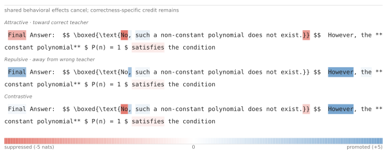
We compare Attractive, Repulsive, and Contrastive self-distillation across three settings, to distinguish improvements in reasoning performance from changes in reasoning behavior. Our experiments address three questions:
Q1: What behavioral shifts do the objectives induce in a hybrid model initialized in non-thinking mode, and how do these affect performance improvements? → Waking a dormant reasoning prior
Q2: Does Contrastive self-distillation improve an instruct-only model that does not have an explicit thinking mode? → Improving an instruct-only model
Q3: Does Contrastive self-distillation improve a model whose thinking mode is already active? → Improving an already-thinking model
Waking a dormant reasoning prior Math
Q1: What behavioral shifts do the objectives induce in a hybrid model16 initialized in non-thinking mode, and how do these affect performance improvements?
We initialize Qwen3-4B in non-thinking mode and train the three self-distillation objectives alongside a GRPO baseline on a hard subset of DeepMath.2929As positive context we use the dataset’s expert solution, with its thinking trace removed, while the negative context is another incorrect rollout from the same on-policy generation group. We skip generation groups for which only one side is available.
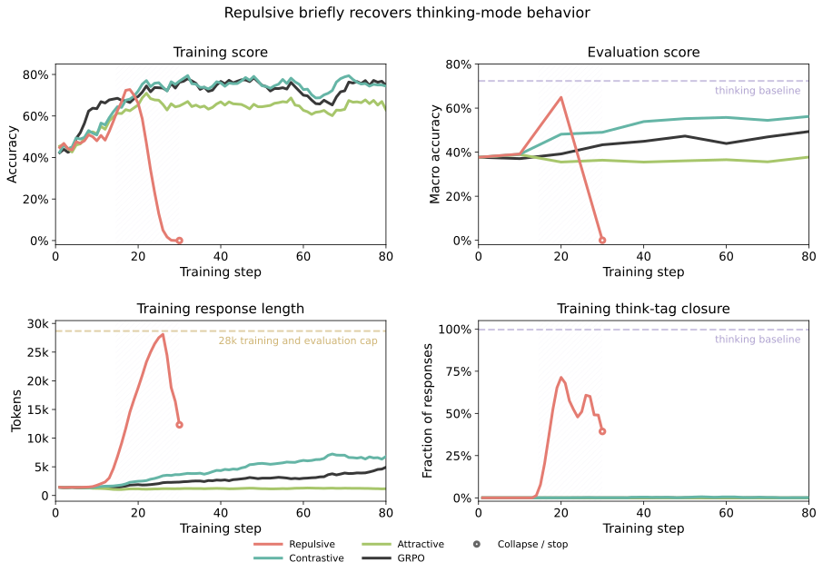
- Repulsive switches the model out of its configured non-thinking mode, emits the think tag, and causes scores to rise sharply, but does not outperform the thinking-mode baseline and eventually collapses under response truncation.
- Attractive improves the training score, but evaluation remains roughly constant while responses shorten.
- Contrastive improves training and evaluation consistently, while its response length grows gradually without approaching truncation.
These results suggest that Repulsive primarily changes the model's operating mode. The model switches from non-thinking mode into its pre-existing thinking mode, but it does not outperform the thinking-mode baseline, and continued response growth eventually causes training to collapse. Attractive has the opposite effect, keeping responses short but producing little improvement on evaluation. Contrastive balances these behavioral shifts, leading to steady improvement without suppressing reasoning or causing a response-length explosion.
Improving an instruct-only model Math
Q2: Does Contrastive self-distillation improve an instruct-only model that does not have an explicit thinking mode?
We repeat the same DeepMath experiment from Qwen3-4B-Instruct-2507.3030The three objectives, privileged information, response budget, and six evaluation benchmarks are unchanged.
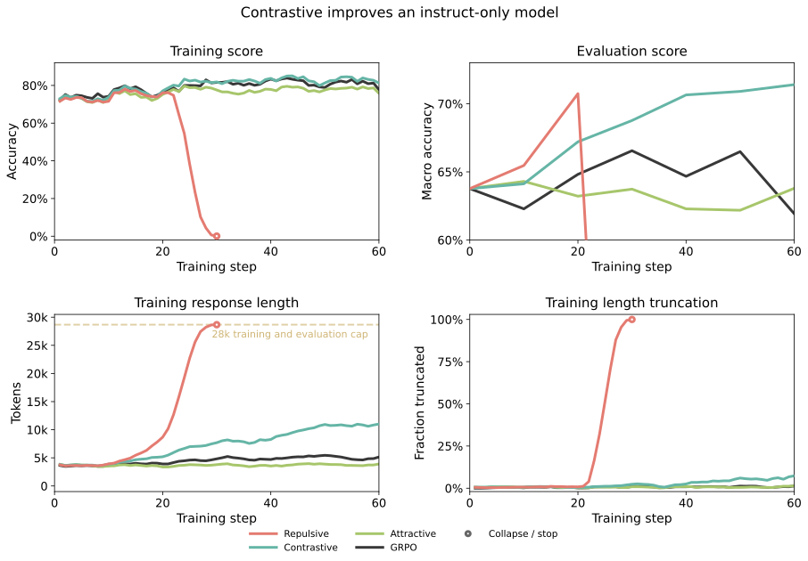
- Repulsive briefly reaches strong training and evaluation scores, before rapid response growth drives it to collapse under truncation.
- Attractive improves the training score, while evaluation remains roughly constant and responses stay short.
- Contrastive improves training and evaluation consistently, while its response length grows gradually without approaching truncation.
Response length makes the behavioral shift visible in both experiments. The Attractive objective keeps responses short, while Repulsive pushes them toward the token limit and eventually collapses.3131However, no run produces <think> tags, so changes in response length do not represent a switch into an explicit thinking mode. Contrastive improves both models without either extreme, showing that its gains cannot be explained by a switch into a pre-existing thinking mode.
Improving an already-thinking model Reasoning Gym
Q3: Does Contrastive self-distillation improve a model whose thinking mode is already active?
This setting tests whether Contrastive's gains persist when mode switching cannot explain them. Math is a difficult testbed for this question because Qwen models are already close to saturation on many standard math benchmarks. We therefore use Group Anagrams3232Group Anagrams asks the model to group words that are made from the same letters. For example, [tea, bat, eat, tab] becomes [[tea, eat], [bat, tab]].33REASONING GYM: Reasoning Environments for Reinforcement Learning with Verifiable Rewards (Stojanovski et al., 2025)34Here, the privileged contexts are the model's own correct and incorrect rollouts, including their thinking traces. from Reasoning Gym33, initializing Qwen3-4B in thinking mode.34
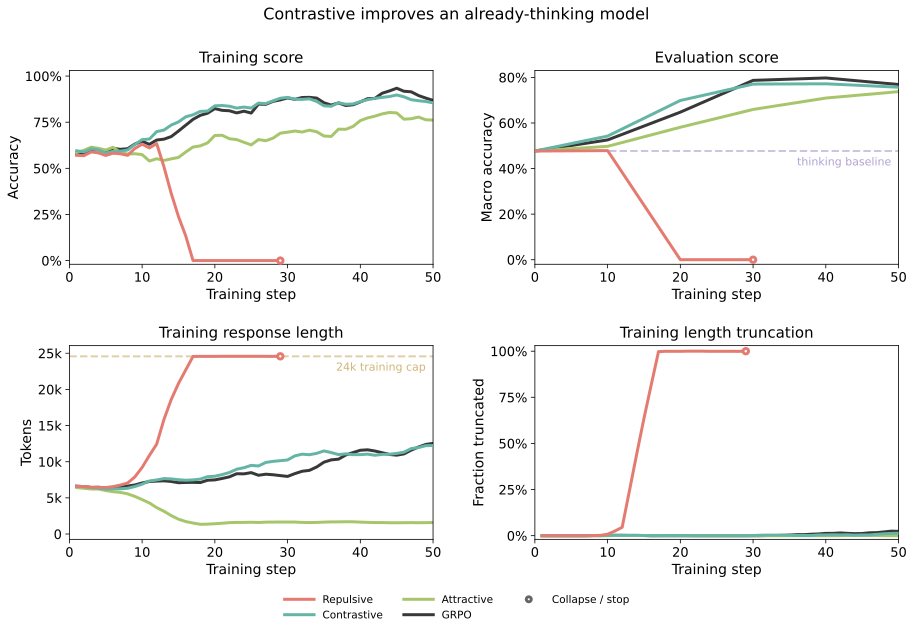
The dynamics mirror the math experiment:
- Repulsive improves through step 12, at roughly the same rate as GRPO, but then collapses under truncation as responses grow.
- Attractive has the opposite effect: training responses become shorter, while training and evaluation scores improve.
- Contrastive improves training and evaluation consistently, while its response length grows gradually and remains well below the budget.
Conclusion and outlook
Isolating the self-distillation signal in attractive and repulsive methods from the verified rewards of GRPO showed that both induce a strong behavioral shift when the teacher is conditioned on a solution. While attractive self-distillation can lead to overconfidence, repulsion from a solution-conditioned teacher increases verbalized uncertainty. We find that the latter can push the model out of its configured non-thinking mode without outperforming the thinking-mode baseline, while response lengths grow uncontrollably and it eventually collapses. We find that a contrastive approach, balancing attraction and repulsion, largely separates correctness from behavior by canceling the opposing behavioral shifts. Across three settings, we find that this contrastive objective successfully extends self-distillation to reasoning tasks, and stabilizes the exploratory tendencies of the KL-ascent objective. Improvements on already-thinking and instruct-only models show that the contrastive objective’s gains cannot be explained by unintended mode switching.
Self-distillation methods have the ability to improve the efficiency of RLVR methods through dense credit assignment. The shift toward overconfident responses and reduced exploration has been a roadblock to their broader adoption, and contrastive objectives offer a practical solution to this problem. Prior contrastive methods have all used this signal to modulate GRPO advantages; we show it can serve as a standalone alternative. We see investigating different ways of balancing teachers, designing new sources of positive and negative context, and scaling these methods to larger models as promising directions for future work.
Citation
Please cite this work as:
Anton Baumann, Akmal Ashirmatov, Leo Schmidt-Traub, Frederike Lübeck,
Jonas Hübotter, Thomas Kleine Buening, and Andreas Krause.
"On Repulsive and Attractive Teachers: Separating Correctness from Behavior
in Self-Distillation." arXiv preprint arXiv:2609.21561, September 2026.Or use the BibTeX citation:
@misc{baumann2026repulsiveattractiveteachersseparating,
title={On Repulsive and Attractive Teachers: Separating Correctness from Behavior in Self-Distillation},
author={Anton Baumann and Akmal Ashirmatov and Leo Schmidt-Traub and Frederike Lübeck and Jonas Hübotter and Thomas Kleine Buening and Andreas Krause},
year={2026},
eprint={2609.21561},
archivePrefix={arXiv},
primaryClass={cs.LG},
url={https://arxiv.org/abs/2609.21561},
}Appendix
For the interested reader, we leave a selection of additional findings we consider worth sharing:
- Repulsion needs a thinking mode to activate. On an instruct-only model, repulsion from a correct-solution teacher only lengthens responses.
- Token-level credit matters. Pooling or permuting the contrastive advantages weakens learning.
- Behavioral shift is mediated by teacher context. Removing the thinking block from the context leads to thinking collapse.
We also include a section describing our experimental setup in more detail.
Repulsion from a correct-solution teacher on an instruct-only model
Figure 4 isolates AntiSD's repulsion term from a teacher conditioned on a correct solution, and shows that it initially raises a hybrid model's accuracy by switching into its thinking mode. This leaves open the question of which improvements can be attributed to repulsion teaching new capabilities, and which are merely the result of activating pre-existing ones. To separate the two explanations, we run the same objective on Qwen3-4B-Instruct-2507, which has no thinking mode to activate.3535The setting is otherwise identical to the instruct-only experiment above: the same DeepMath training subset, the same 28k response budget, and the same six evaluation benchmarks. As in Figure 4, the teacher is conditioned on a correct solution, which is what AntiSD and Rebellious Student repel from.
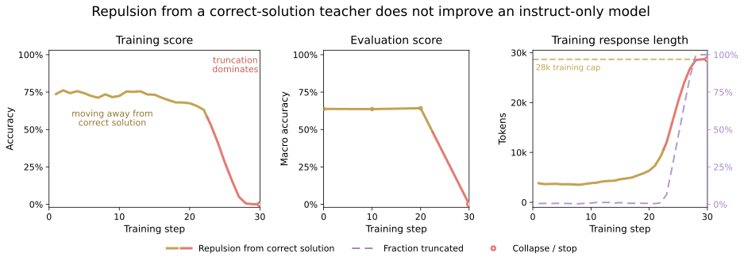
The evaluation accuracy never improves upon the accuracy at initialization. The mean across benchmarks moves from 63.8% at step 0 to 63.6% at step 10 and 64.2% at step 20, while training responses grow from 3.8k to 9.3k tokens over the same period.
Past step 22, the truncated fraction soars, reaching 100% by step 29 as both training and evaluation accuracy collapse to zero. No response emits a thinking tag at any point.
Pooling advantages
Contrastive improves reliably even when the model already starts in thinking mode. This motivates a closer look at the underlying mechanism: perhaps the contrastive objective works mainly as a sequence-level policy-gradient signal, rather than through fine-grained token-level credit assignment.
For the balanced objective, each generated token receives the contrastive advantage:
We can average these advantages within windows and assign the pooled value back to every token in the window. At one extreme, each token keeps its own advantage. At the other, the entire response receives one scalar:
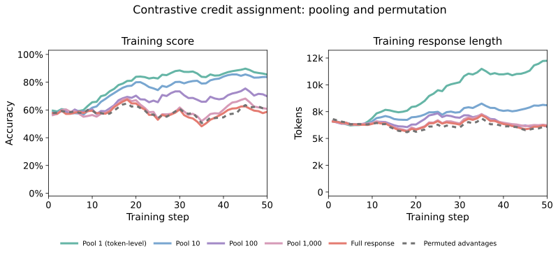
To test the sequence-level explanation, we vary the pooling width from individual tokens to the full response while keeping the data and objective fixed. We observe a progressive degradation in performance as the pooling size increases. Pooling the entire response leads to no improvement in the training score. Small pool sizes largely preserve the gain: a pool size of 10 learns only slightly more slowly, and is also more token-efficient.
As explained in the method section, the positive and negative means cancel each other out, leading to token-level advantages whose mean is close to 0. Pooling could therefore have the effect of artificially diluting the training signal, requiring higher learning rates to account for the cancellation effect. As a stronger control, we permute the token advantages within each response: this preserves the statistical distribution but breaks their alignment with the tokens that produced them. At step 50, the permutation baseline reaches 62.2% training accuracy with 6.1k-token responses, compared with 85.5% and 12.2k tokens when each advantage remains aligned with its original token.
Positive source and thinking context
The Group Anagrams result above uses the model's own positive rollout and keeps its thinking trace. We ablate that setting by removing the thinking trace and replacing the positive rollout with an expert solution in the Contrastive setting.
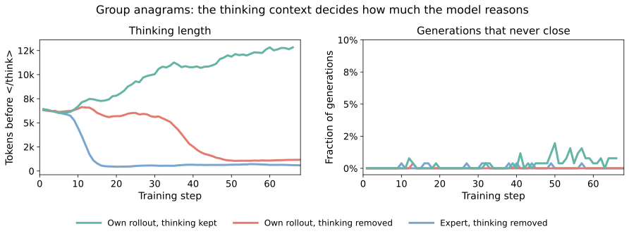
All three arms begin with a thinking length of 6.0k-6.2k tokens over steps 1-10, and then separate. The baseline roughly doubles its thinking length, ending at about 12.8k tokens. Removing the thinking trace reverses this trend and shrinks thinking to about 1.2k tokens, and replacing the rollout with an expert solution strengthens the effect, ending at about 0.6k tokens.
Truncation does not explain the difference: the fraction of generations that never close their thinking block stays below 2% in all three runs, and all three keep emitting well-formed <think>...</think> blocks throughout.
Experimental setup
Unless specified otherwise, all experiments fine-tune Qwen3-4B with 8 on-policy rollouts per prompt, a batch size of 32, temperature 1, and top-$p$ 1. On math and reasoning gym, self-distillation uses a token-level Jensen–Shannon divergence (JSD) estimator and AdamW with a $5\times10^{-7}$ learning rate; GRPO uses $2\times10^{-6}$. Self-distillation runs skip examples for which the required positive or negative context is unavailable.
Self-Distillation Wordle
We have read and discussed so many great self-distillation papers in our meetings that, at some point, we started struggling to keep them all apart. So we made a small game to see how well we (and you) actually remember them. We sincerely apologize to the authors of any five-letter self-distillation methods we missed.